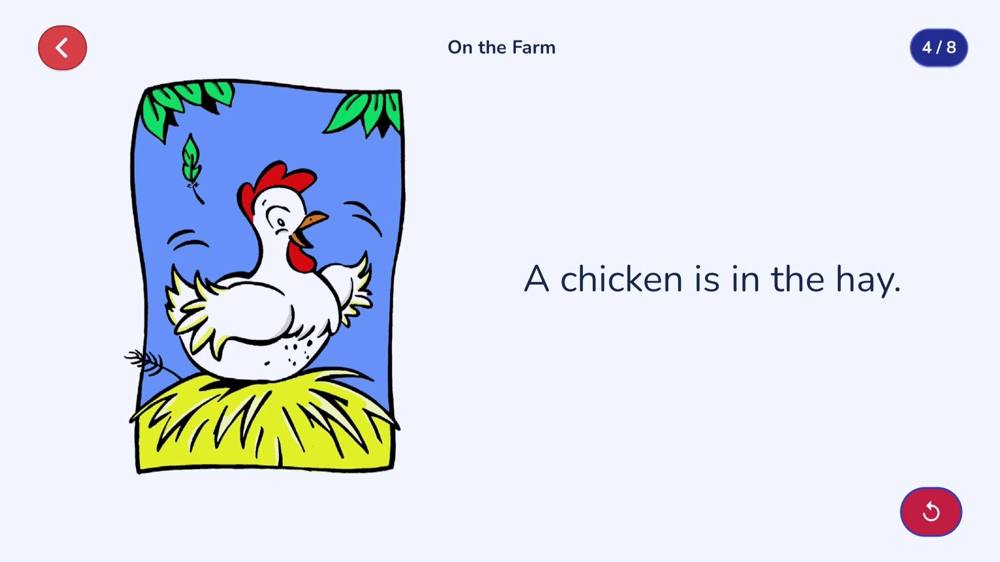

翻一页，
听一句
阅读时，插图和句子一起出现在大屏上。读到一半退出，下次打开继续读。
- 左 右
- 翻到上一页或下一页
- 确认
- 播放或暂停当页朗读
- 返回
- 回到书架

装到电视上
准备一台 Android 电视或盒子。电脑端 AI 助手可以帮你安装，也可以自己用 U 盘安装。
- 系统要求
- Android 6.0 或以上
- 已试装机型
- 小米电视 MiTV-AETP0，Android 9
内置六本原创有声小书。B、C 两级各三本，试试用 B、C 或 S 筛选书名。

用 U 盘安装
- 把官方提供的 APK 安装包复制到 U 盘，再插到电视上。
- 用电视的文件管理器找到 APK，打开并按屏幕提示安装。
- 回到电视的应用列表，打开 PhoniPop。
如果电视拦截安装，在系统提示里查看该文件管理器的安装权限。不同机型的设置入口可能不同。
交给电脑端 AI 助手
- 让电脑和电视连接同一局域网。按电视系统提示开启 ADB 调试，记下电视 IP。
- 把下面的提示词发给能在电脑上运行命令的助手。助手会从官网下载并校验安装包。
- 电视弹出允许调试或安装确认时，用遥控器确认。
做一本自己的绘本
把自己制作或获准使用的英文绘本交给电脑上的 AI 助手。先从一本开始，做好的 ZIP 就能带到电视上读。

- 准备素材。把一本绘本的 PDF 或 PPTX 放进单独的文件夹。有配套录音也一起放进去，按页码命名。
- 把文件夹和下面这段话交给桌面 AI 助手。助手需要能读取本机文件、运行 Python。如果已下载制书工具包，可以直接作为附件交给它。
- 看一遍成书。按助手给出的页码核对插图、句子和朗读。把交付的绘本 ZIP 带到电视，按下一节导书教程操作。
把绘本加进书架
准备一个拼读泡泡内容包。保留 ZIP 原样，直接在电视上选中它。
- 把 ZIP 放到电视能读取的位置。拷到 U 盘，或放进电视的本地存储。
- 从书架打开「导入图书」。旧版显示「添加图书」。选「U 盘 / 本地文件」或「系统文件选择」，按提示授予所需权限。
- 选中 ZIP，确认添加。查看书名清单，确认后返回书架打开绘本。导入完成就可以拔掉 U 盘。

装好以后
导入后还需要联网吗？
导入成功后，绘本保存在电视上，阅读和播放包内音频都可以离线进行。
为什么这本书没有声音？
朗读来自内容包。有些包只有图片和文字，仍然可以翻页阅读。上面的示例 ZIP 就是图文包。
更新 App 时，已导入的书怎么办？
使用同一发布渠道的新版 APK 覆盖安装。先保留旧版 App 和原始 ZIP，避免卸载导致书库和进度被系统移除。